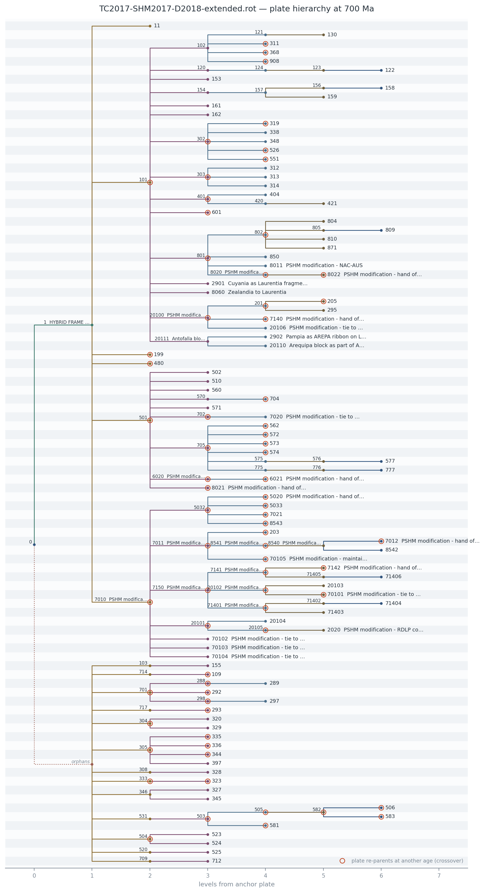
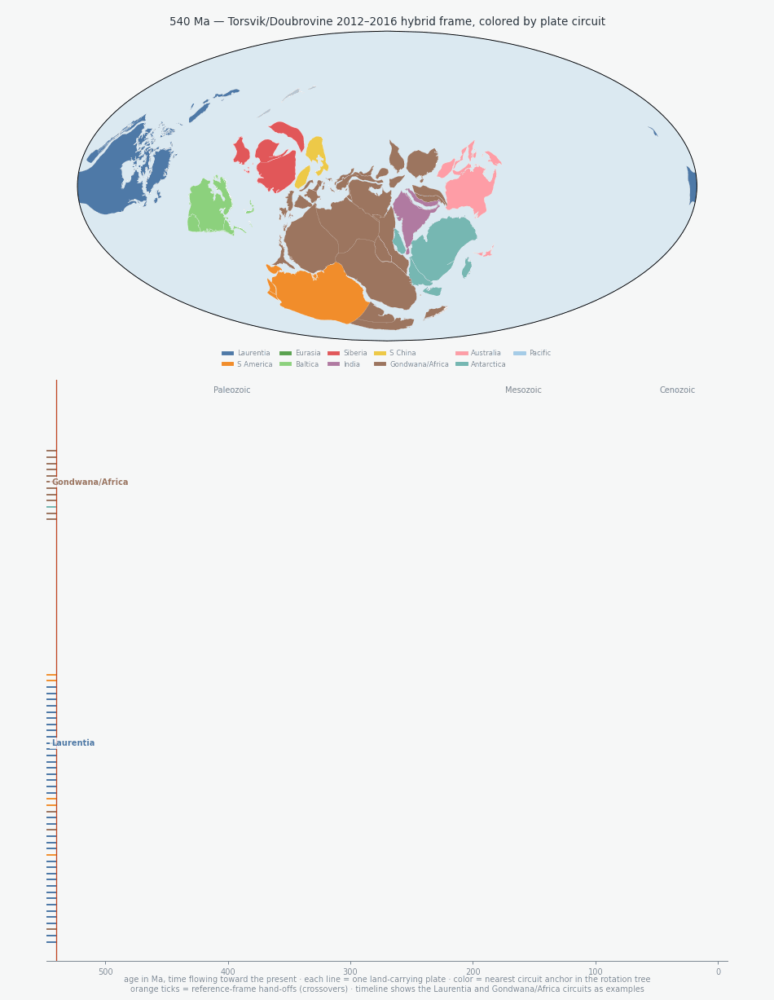

Why
A GPlates rotation file encodes a rotation tree: every moving plate
is positioned relative to a fixed plate, which is positioned relative to
another, until the chain reaches the anchor (plate 0). That wiring is easy
to write and hard to see — especially where plates re-parent through time
(crossovers) or quietly lose their path to the anchor.
rotree parses the .rot file directly (no pygplates
dependency), rebuilds the hierarchy at any reconstruction age, and draws it.
- Zero-dependency parsingReads PLATES4/GPlates .rot files with plain Python — pole values, comments, and source line numbers all preserved.
- Crossovers made visiblePlates that change fixed plate at another age are ringed in orange;
rotree crossoverslists every hand-off in the model. - Citation-aware hover cardsThe interactive view quotes the file's own
!annotations — typically the citation or reasoning behind each reference-frame choice — with .rot line numbers. - Nothing silently droppedPlates with no path to the anchor land on a labelled orphans branch, handy for debugging model completeness.
- Bring your own knowledgeA sidecar JSON of curated events — orogenies, arcs, rifts with time spans and references — joins the hover cards, with active plates drawn as diamonds. The rotation file stays untouched.
Install
pip install git+https://github.com/Institute-for-Rock-Magnetism/rotree.git
# with plotly for the interactive HTML output
pip install "rotree[interactive] @ git+https://github.com/Institute-for-Rock-Magnetism/rotree.git"Quick start
# static cladogram at 700 Ma
rotree plot model.rot --time 700 -o tree_700Ma.png
# interactive: hover nodes for hand-off history and citations
rotree html model.rot --time 700 -o tree_700Ma.html
# where does the wiring change through time?
rotree crossovers model.rot
# plain-text view
rotree tree model.rot --time 700Static output

In motion

Interactive output
Hover any node — in particular the bifurcation points where branches join a fixed plate — to see the rotation segment pinning it at the chosen age (pole, time span, source line), every reference-frame hand-off it undergoes through time, and the annotations behind those choices.
Tip: the tree is tall — scroll inside the frame, or open the demo full-page.
Python API
from rotree import parse_rot, build_tree, plot_cladogram, save_interactive
model = parse_rot("model.rot")
ax = plot_cladogram(model, time=600, highlight={50311, 50312})
ax.figure.savefig("tree_600Ma.pdf")
save_interactive(model, "tree_600Ma.html", time=600)
root = build_tree(model, time=600) # PlateNode hierarchy
for x in model.crossover_details(201): # hand-offs + annotations
print(x.time, x.old_fixed, "->", x.new_fixed, "|", x.after.comment)